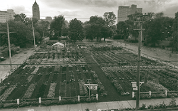

SENSORIAL URBANISM
URBANISM
In cities, a dominant environment in our modern age, this environment can include skyscrapers, construction sounds, and fogs of exhaust. Sensorial urbanism focuses on pushing back against our over-reliance on vision when in urban environments.¹
Might there be potential within multi-sensory design to expand our holistic experience of city spaces? Could we utilize this to reimagine well-being in the public realm?² Here’s a global look at our current state of sensory awareness and urban planning as a way to explore such possibilities.

DETROIT
Meet America’s first sustainable urban farming “agrihood” in the North End of Detroit, a recent addition from the Michigan Urban Farming Initiative (MUFI).⁶ This three-acre space is a reimagined form of residential development, centered around a thriving two-acre garden, fruit orchard, and children’s sensory garden. Not only does this urban farming foster a serene sensory presence in the midst of Detroit, it brings people together by restoring vacant buildings and lots, providing produce to the neighborhood, and generating sustainable resources and common space in the community.
REIMAGINING
PARCEL FIVE
Grassroots movements, community gardens, children’s parks, and more, can be found around the city, yet there is still potential for multi-sensory design and engagement to transform more public spaces.
We’ve decided to get the ball Rolling by re-envisioning the Parcel 5 lot space in the center of downtown Rochester. The space stood as an urban shopping center until 2009 when the stores were demolished. Since then, the area has been subject to various new development plans, and there has been substantial pushback on proposals to revert Parcel 5 back into open green space.⁷ Using sensorial urbanism, here’s what we’ve envisioned as a revitalization plan:
Lots of plants.
Sit among dangling willow trees and smell the lilac bushes (a local favorite), plus walk among small structures and pathways lined with vines and tall brush.Auditory interaction.
Walk over an elevated bridge with railings made
of harp strings beckoning to be played,
and pass between a structure of windchimes.
Warmth and comfort.
Spot the globular, heated amphitheater, made of glass for optimal views, and lined with cozy inward-facing seating. The ground-level exterior features a chalk wall for artistic expression.Feel and play.
Hear and touch interactive, solar-powered fountains (turned winter ice sculptures), roll around on grass, or take a seat on
organic wooden benches and the circular, leafy swing set.What becomes a reality around us is in our hands – or eyes, or ears, or nose, for that matter. Start by closing your eyes and paying attention in whichever space you find yourself. Take in the surroundings with all of your senses and heighten your awareness of your physical engagement with the environment.
Then consider: how can urban sensory design expand beyond just sensory engagement? Where does it merge with a fuller, healthier human experience? How can new approaches transform our everyday experience, and our future, within spaces that foster wellbeing? The next sketch is yours.